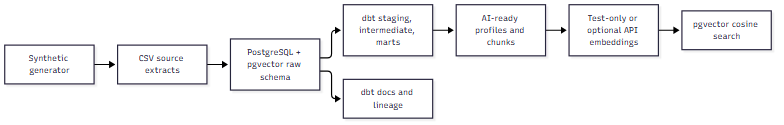

Data
Data engineering, governance and AI-ready data products.
Personal prototypes using synthetic data. They are not based on, or connected to, any firm's systems, data or processes.
Builds

Data engineeringSynthetic data
AI-ready data warehouse
One dbt project across PostgreSQL + pgvector, Snowflake and Databricks. It includes SCD2 snapshots, idempotent incremental loads, model contracts, data-quality tests and a vector-search layer. Identical results across three platforms; CI green. Synthetic data.